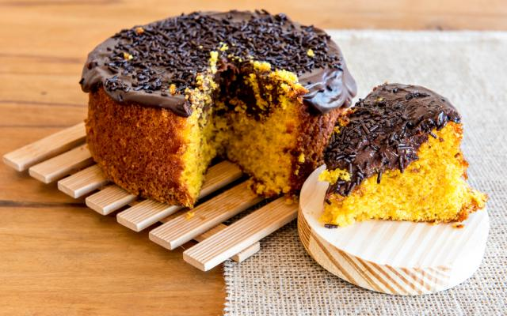

Receita Bolo de Cenoura com cobertura de Chocolate

- 3 cenouras médias
- 3 ovos
- 3 xícaras de farinha de trigo
- 1/2 de xícara de óleo de canola ou coco
- 2 xícaras de açúcar
- 1 colher (sopa) de fermento em pó
- 1 pitada de sal
- 1 sachê de leite condensado
- 1/2 caixinha de creme de leite
- 4 colheres (sobremesa) de chocolate em pó
- 1 barra de chocolate amargo 70% cacau
- Preaqueça o forno a 180º C. Descasque e rale as cenouras. Em uma travessa ou batedeira, misture os ovos, o açúcar, o óleo e a cenoura ralada.
- Acrescente a farinha de trigo peneirada e misture com uma espátula antes de ligar a batedeira em baixa velocidade.
- Adicione o fermento e mexa delicadamente com a espátula, depois coloque uma pitada de sal.
- Unte uma forma, despeje a massa e leve ao forno por cerca de 40 minutos, ou até dourar.
- Para o recheio, cozinhe o leite condensado, o creme de leite e o chocolate em pó até soltar do fundo da panela. Corte o bolo ao meio, recheie com o brigadeiro e cubra com a outra metade. Derreta o chocolate e cubra o bolo.
Voltar